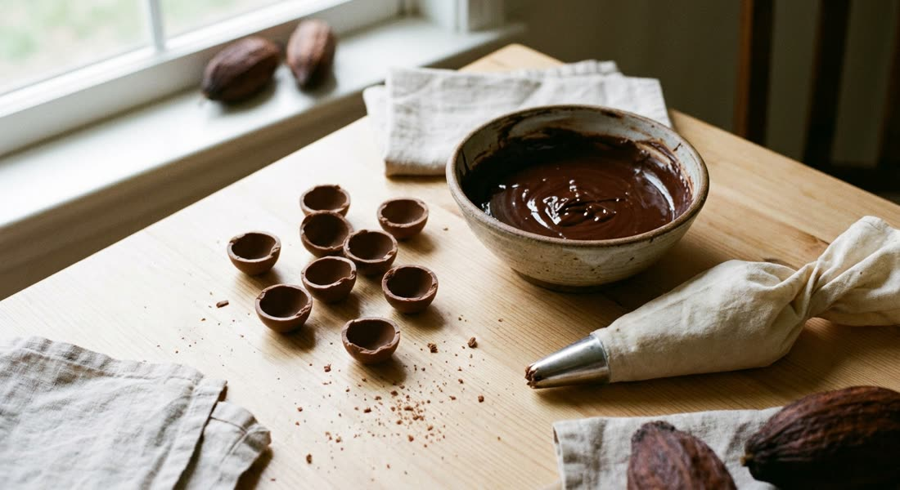
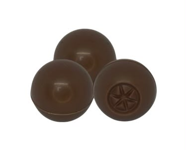

MPSmps.alimentos

♡💬↪🔖
Reels · Mão na massa
mps.alimentos Enquanto umas moldam casca por casca, você já tá vendendo 😉🍫
A casca já vem pronta, lisa e brilhante ✨
Você faz o recheio da sua receita, fecha e entrega.
Menos tempo na bancada, mais pedidos no mês 💛
Chama no WhatsApp e peça a tabela 👇
#confeitaria #trufas #chocolatenacional #docesparafesta
MPSmps.alimentos

♡💬↪🔖
Carrossel · Mão na massa
mps.alimentos 5 recheios pra vender mais com a mesma casca 🤎
1. Ganache
2. Brigadeiro gourmet
3. Doce de leite
4. Ninho
5. Maracujá
A base é a nossa, o sabor e a assinatura são seus 👩🍳
Salva esse post e me conta qual você vai testar 👇
#confeitaria #confeiteira #trufaoca #docinhosdefesta
MPSmps.alimentos

♡💬↪🔖
Foto · Calendário e festa
mps.alimentos Uma mesa dessas não precisa custar a sua madrugada 🌙
Com a casca pronta, você monta o volume de uma festa inteira em muito menos tempo ⏱️
O acabamento fica uniforme, do primeiro ao último docinho ✨
Vai ter festa grande no mês? Chama no WhatsApp e monte seu pedido 💬
#docesparafesta #casamento #confeitariacuritiba #mesadedoces
MPSmps.alimentos

♡💬↪🔖
Foto · Bastidor e prova
mps.alimentos Casca lisa, brilhante e no ponto, feita aqui no Brasil 🇧🇷🍫
Chega pronta pra você rechear e vender.
Mesmo padrão em todo lote, do primeiro ao último pedido 💛
Quer conhecer? Chama no WhatsApp e peça a tabela 👇
#chocolatenacional #trufaoca #confeitaria #feitoaqui